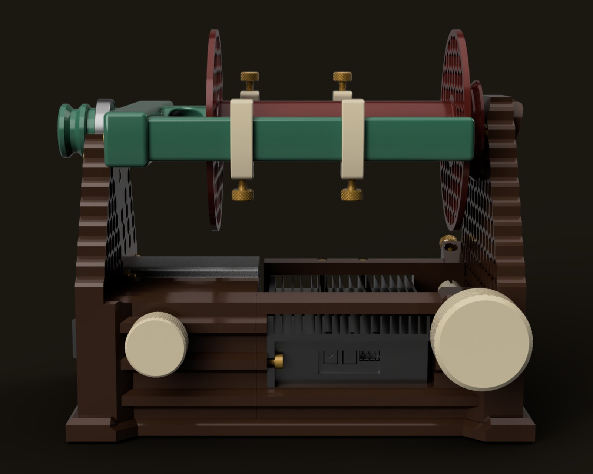
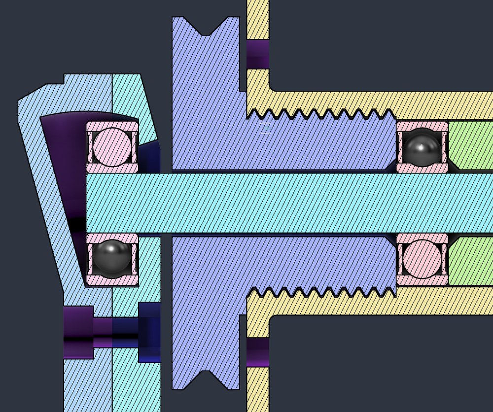
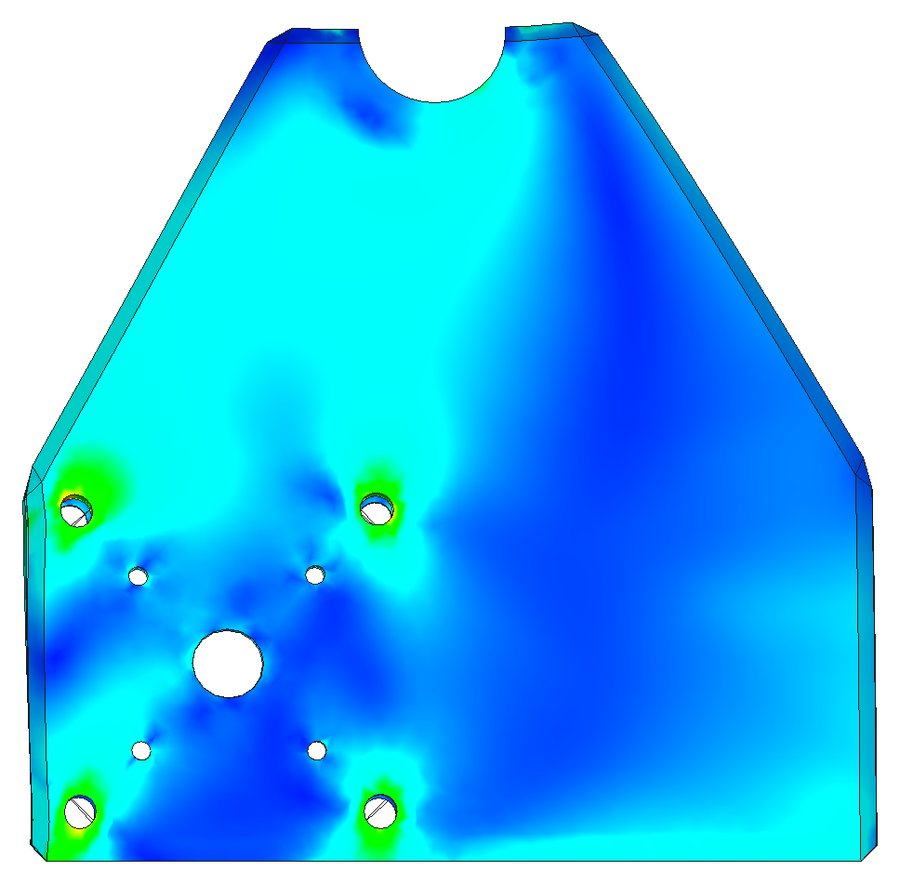
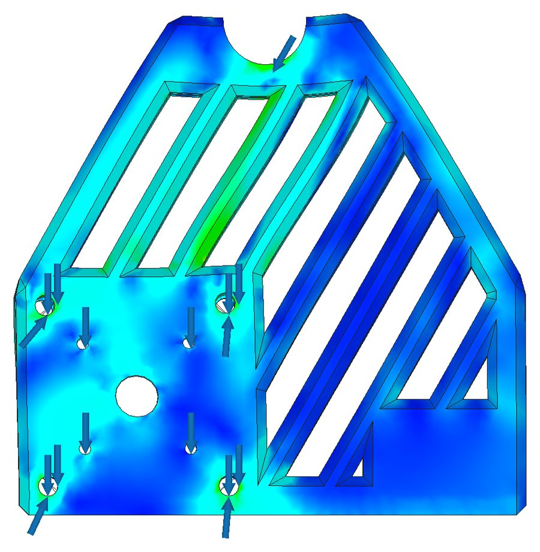
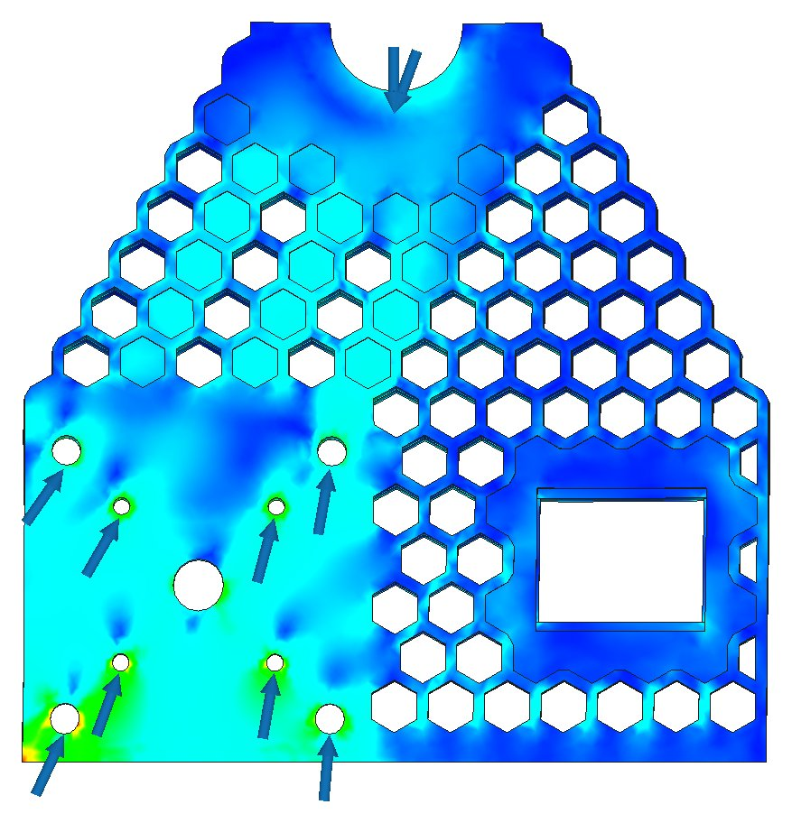

Designing Clotho
Some notes on why Clotho is the way she is: the flyer held at both ends, the bobbin change, the bearings, and a few parts that didn’t make the cut.
October 2026 · Design notes
Where it started
A friend of mine, a fiber artist in the desert Southwest, asked me if I could make her an eSpinner. “Sure,” I said. “What’s an eSpinner?” I still don’t spin, so pretty much everything I know about it comes from her and from the people who have built these things and told me what they thought.
The first answer was Arachne, which was built to be cheap and accessible, and she was. Clotho is the next one. She trades Arachne’s brushed gearmotor for a 94 W brushless motor with a closed-loop driver, holds the flyer at both ends like a traditional wheel, and changes bobbins without any tools. She also uses the same bobbin Arachne has used since v1, so if you built an Arachne you get to keep your bobbins, flyer, and orifice. Since bobbin collecting seems to be a secondary pastime with fiber artists, this seemed like a nice thing to do.
The parts run about $185 if you buy the whole list yourself, or about $97 a wheel if you build a couple and split the packs with a friend (the build page has the details).

Clotho, rendered from the published model.
Two bearings and a bobbin change
A traditional treadle wheel holds the flyer at both ends; that’s what the maidens are for. Most eSpinners only hold it at one end, which makes changing bobbins easy (just slide it off the free end), but you pay for it while you spin: the yarn builds up unevenly between the hooks, the filling bobbin turns into an unbalanced rotating mass, and a single bearing gets to carry all of it on the longest lever arm available.
Clotho holds both ends. The front bearing (a 6804 on the orifice) sits in an open saddle on the front riser, and the drive belt holds it down. The back of the rod runs in a 608 that sits in a shaped cavity in the rear riser, and the brake line keeps that one in place. To change bobbins you take the belt off, lift the front of the flyer out of its saddle, and pull the rod out of the rear bearing, which can pivot 15° in its cavity so the rod comes out at an angle. No tools, and no loose parts to lose in the couch.

From the side, front on the left. The flyer runs from the front bearing on the orifice to the rear one in the rear riser, with the bobbin riding on the rod between them.
The angle is a compromise. More pivot makes the change easier but leaves the cavity sloppier around the bearing, and less pivot holds the bearing tighter but makes changing bobbins fiddly. An early version held the rear bearing in with a magnet; the final one does it with nothing but the shape of the cavity.

A section through the rear riser (left) and the back end of the bobbin. The angled pocket behind the 608 is what gives the bearing room to pivot when you lift the front of the flyer.
The bearing saga
Clotho runs quietly enough that bearing noise, which you’d never notice on Arachne over the gearmotor, became the loudest thing on the machine. The rear bearing also gets a constant side load from the brake band. So I went looking for a better bearing:
- Penny-grade 608s come packed with enough grease that the rod spins in the inner race instead of the balls actually rolling. A jar of alcohol and a shot of silicone spray fixes that.
- Skateboard bearings came in undersized (7.76 and 7.86 mm bore) and needed a hammer to get on. Once they were on they ran beautifully, which is great right up until you remember the thing has to come apart for every bobbin change.
- Industrial ABEC-5 C3 bearings showed up. They didn’t fit either.
It was the rods. Cheap 8 mm rod is sheared to length rather than ground, which crushes the last centimeter or so of each end, even though the middle measures a true 8.00 mm. A 0.25 mm chamfer on each end and a bit of 180 grit fixes it in about four minutes, no new parts required. So if a bearing won’t go on, suspect the rod first. When it’s right, the rod turns the bearing instead of spinning inside it.
The spine that got deleted
The early design ran a threaded rod the length of the machine to carry the structural load. In CAD the printed parts between the risers (the pot and switch housing, the controller bracket, and the brake retainer) were joined with straight dovetails, and when I ran the FEA on just that chain it carried 23 times the design load, and that’s with the applied loads already quadrupled to allow for the weak bonds between printed layers. So the rod came out.
The riser pattern came out of the same kind of analysis. The front riser went from solid, to diagonal ribs, and then back to the hex pattern from Arachne. The hexes come in three flavors (cut through, backed, and solid), mapped to the stress plot.

1. Solid

2. Diagonal ribs

3. Hexes, as built
Front riser stress in Fusion’s FEA, blue for low and green for higher. The arrows are the applied loads.

Clotho from the rear.
Making 94 watts behave
The most likely way to get hurt on any spinning wheel is long hair getting wound into the flyer, and Clotho has a lot more motor than most of them. There are a few things standing between the motor and you:
- The belt slips. A round poly belt on smooth pulleys will slip before it can transmit dangerous torque, which is the point. On the bench, at half the current limit and half speed, I couldn’t stall the bare motor shaft by hand (the meter briefly showed about 2.5 A, roughly 60 W). The driver’s current limit is the backup, but it reacts to sustained load rather than peaks, so the belt goes first.
- The motor mounts break. They’re sized to snap if the flyer ever jams hard. I sized them with a harness and test jig screwed to a door frame: work out the equivalent static load at 1 g, then print the mounts thinner and thinner until they break at that load.
- You set the top speed. The driver ships set to 3,500 RPM, which is 500 more than the motor is rated for. Turn the speed limit pot all the way down before you power it up the first time, bring it up to the fastest speed you’ll actually want, and then do your spinning with the knob or the foot pedal below that. A meter that reads Hz will tell you the exact number if you want it, but you don’t need it.
Small decisions, with reasons
- The direction switch has no light and no labels. Spinners check direction by looking at the flyer, not the switch. If S and Z come out backwards just pop the switch out and flip it over; the mount is symmetrical for exactly that reason.
- The brake screw is printed, M18×2.5. The coarse pitch prints fine on pretty much any printer, and I didn’t want to assume you have a good one. It sits below the retainer where you can’t see it, unless you print it in a contrasting color, in which case it shows through the hex cutouts in the rear riser. That’s nice.
- Finer brake adjustment. The smaller barrel takes up about 28% less line per turn than Arachne’s, so a quarter turn on Arachne is about a third of a turn on Clotho. I don’t spin, so my friend was the judge of whether that was better.
- The brake spring is held by a thumbscrew. I originally let the spring drop off its hook when you let off the tension, thinking it would make bobbin changes easier. It was just annoying, so now a thumbscrew goes through the eye of the spring, which is what Arachne v1 did in the first place.
- The controller sits heatsink-up and unshrouded under the flyer, so the flyer fans it for free.
- PETG, not PLA. PLA is actually stiffer, but it goes soft at a lower temperature and tends to crack where PETG will bend. The motor itself shouldn’t ever get hot in normal use (you can’t really load it that hard while spinning; unspun wool can’t take 90 W of linear load), but the first one lives in the desert, where a plain shelf under the motor would bend like a banana in the heat, so the base holds the motor up from below. If you live somewhere really hot, print it in ABS or ASA.
- A rubber gasket between the motor and the riser keeps motor noise out of the frame. It’s optional, but you’ll hear the difference.
Honest tradeoffs
It’s plastic, not exotic hardwood. There’s no battery option (I’m not saying you couldn’t run a couple of car batteries in series, but I’m not saying you should either). It hasn’t had decades of redesigns and thousands of users. It’s one person in the Northwoods with six printers, usually two of them working.
What’s next
- An exploded-view build guide, made from the Fusion model, so you can see exactly where every part and screw goes. In the works.
- An Arachne v2 build page. Clotho is the better wheel, but Arachne is still cheaper, easier to print, and a lot friendlier for a first build. It’s also loud.
- A pin-style flyer with a rotated orifice and five orifice sizes. One has been built, and it’s too heavy; the arms flex and rub, so it’s back on the drawing board.
- A three-bobbin lazy kate. Designed, not built yet.
Two things that used to be on this list are done: the foot pedal has configurable dead zones, and there’s a pedal setup page right here on the site that calibrates it and sets them from your browser.
Build one
Clotho is free and open source (CC BY-SA): the parts list, the full STEP model, printable assemblies, instructions, and foot pedal firmware. If you build one, break one, or improve one, I want to hear about it.
Parts list and build guide → Files on Printables